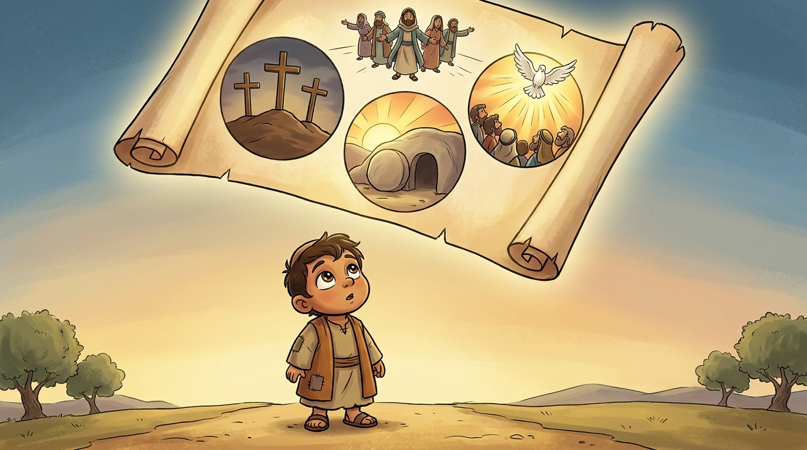

1Every story you read in the Bible is a small story inside a bigger story. The bigger story is one BIG story — the gospel. Jesus living, Jesus dying, Jesus rising, Jesus building his church, the Word increasing across the world, until Jesus comes back. That is the BIGGEST story. It is the only story that lasts forever. Your life is a small story inside that biggest story.
“In the beginning was the Word… and the Word was God.” — John 1:1